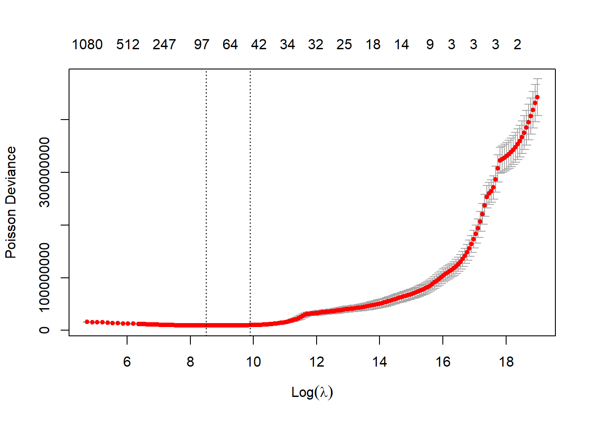
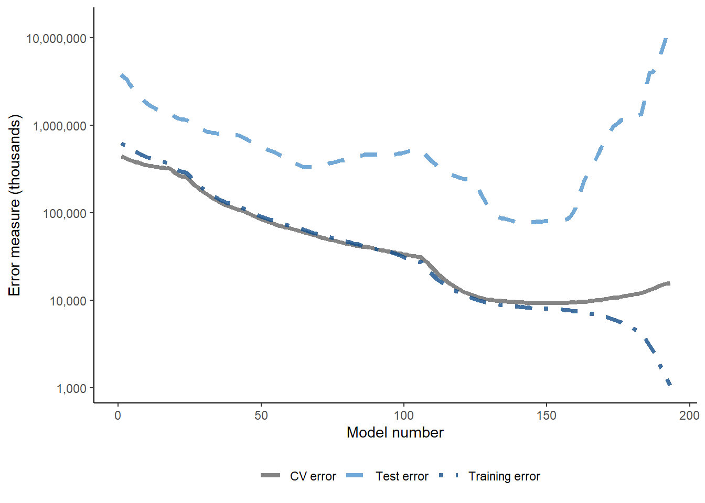
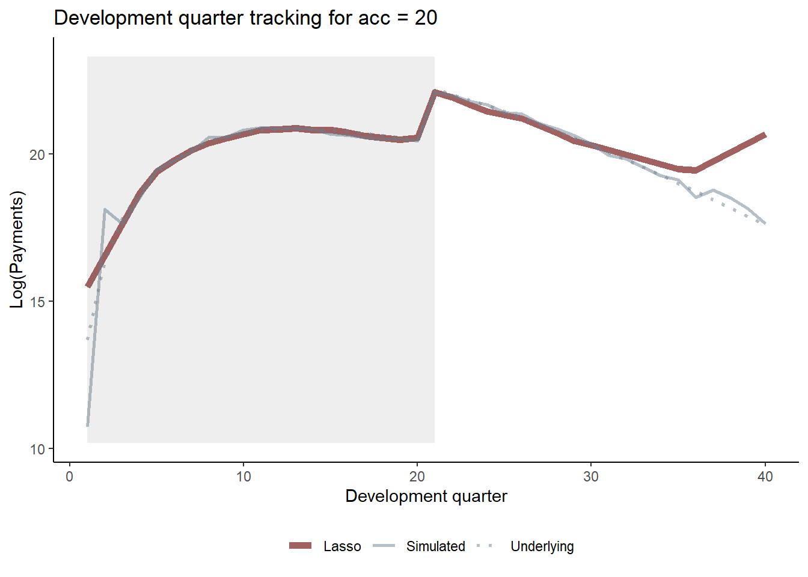
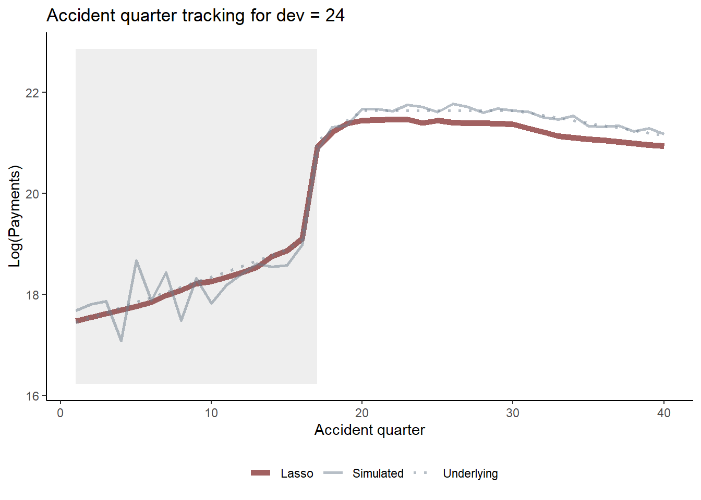
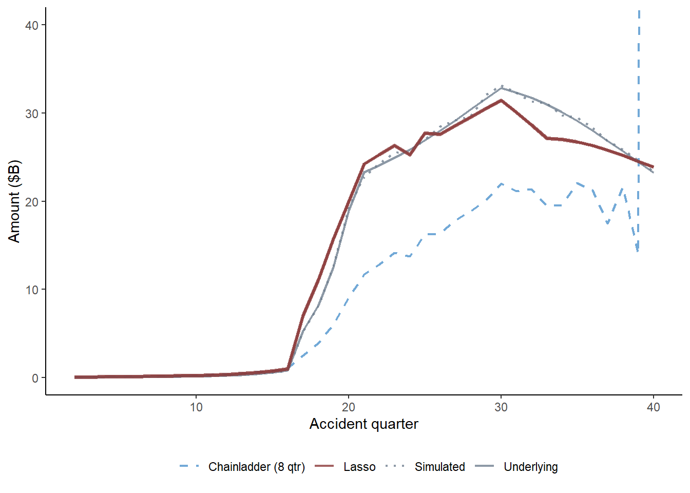

library(glmnet)
## Loading required package: Matrix
## Loaded glmnet 4.1-7
library(ggplot2)
options("scipen"=99)April 2023 update
The article below is my original article working through a tutorial example of the R code from our Variance paper Self-Assembling Insurance Claim Models Using Regularized Regression and Machine Learning.
Since then some or all of the article has been published in other forms with slight variations to the code and content:
- Present article - uses base R
- MLRWP blog - some introductory material, code makes use of the
data.tablepackage with some nicer graphical output as well - ML modelling on triangles - another MLRWP article where the Lasso was one of a number of methods used. In this article I implemented it using the
mlr3ecosystem - A python approach this article is based off the one above, but this time using python, so contains a discussion of how to implement this Lasso approach in that language
Introduction
Recently, Greg Taylor, Hugh Miller and myself completed some work to develop an approach for fitting a claims reserving model using regularised regression, the LASSO in particular. This was published in the Variance Journal in 2021.
The motivation behind this work is to develop an automatic method to construct a general insurance claims reserving model for data sets with complex features where simple approaches such as the chain ladder fail. In the past we have advocated the use of GLM models for such data sets, but the construction of a GLM is a time-consuming process, even for a skilled analyst. Our aim was to develop a procedure that produced a model similar to a GLM, but using machine learning techniques. This approach has performed well - as may be seen from the charts towards the end of this example, which show that the fitted curves can track the underlying specification quite well, even in the presence of significant noise, or difficult to detect interactions.
The paper fills in the details around the approach, so they will not be repeated here. Instead, this will focus on illustrating the use of the LASSO in claims reserving by fitting the model to one of the synthetic data examples discussed in the paper. I will be working through a fully worked example with all R code available. To reduce dependencies on external libraries, I have carried out the work in base R as much as possible.
In our paper we investigate the use of the LASSO using four synthetic (i.e. simulated) data sets as well as a real data set. This worked example will use the third simulated data set. The specifications for this data set are given in Section 4.2.1 of the paper. The main points to note are that this data set :
- is a 40x40 triangle, with
- accident and development period effects
- calendar period effects (i.e. superimposed inflation)
- an step-interaction between accident and development period for accident periods greater than 17 and development periods greater than 20 (note this affects only 10 cells of the triangle)
You can download a quarto file of this notebook here if you want to try to run the code yourself.
R code
Setup
First we must open R and load any libraries required. As noted above, I will use base R as much as possible so there are only two additional libraries required:
glmnet- this is the library we used to implement the LASSO model. References are in our paper.ggplot2- for producing graphs.
Generating the synthetic data set
First we need a data set. The code below, using a seed of 130 produces the data set used in the paper.
Before we generate the data, we need to create a small utility function which will be widely used - it takes a vector var and produces a spline piece between start and stop - flat (and 0) up to start, thereafter increasing to stop and then levelling out at this point. This is used both in the data generation and in the generation of basis functions for the LASSO.
LinearSpline <- function(var, start, stop){
pmin(stop - start, pmax(0, var - start))
}The code below generates the data set as specified in our paper. If you want to use our data set, use a seed of 130. Otherwise, use different seeds to produce different data sets.
# initialise the seed for reproducibilty
set.seed(130)
numperiods <- 40
#periods
kk <- rep(1:numperiods, each = numperiods) #AQ
jj <- rep(1:numperiods, times= numperiods) #DQ
tt <- kk+jj-1 # PQ
# make a function of the SI effect to make it easier to read
gammafunc <- function(t){
gg <-
ifelse( t<=12, gg <- 0.0075*LinearSpline(t,1,12),
ifelse(t<=24, gg <- 0.0075*LinearSpline(12,1,12) + 0.001* (t-12)*(t-11)/2,
ifelse(t<=32, gg <- 0.0075*LinearSpline(12,1,12) + 0.001* (24-12)*(24-11)/2,
ifelse(t<=40, gg <- 0.0075*LinearSpline(12,1,12) + 0.001* (24-12)*(24-11)/2 + 0.002*(t-32)*(t-31)/2,
0.0075*LinearSpline(12,1,12) + 0.001* (24-12)*(24-11)/2 + 0.002*(40-32)*(40-31)/2
))))
1*gg #can scale up shape here if desired
}
alpha <- log(100000)+0.1*LinearSpline(kk,1,15)+0.2*LinearSpline(kk,15,20) - 0.05*LinearSpline(kk,30,40)
beta <- (16/3 - 1)*log(jj)- (1/3)*jj # a is 16/3, b is 1/3
gamma <- gammafunc(tt)
mu <- exp( alpha + beta + gamma + 0.3*beta*ifelse(kk>16 & jj>20,1,0)) # need to check
varbase <- (0.3 * mu[ kk==1 & jj ==16] )^2 # can scale variance up and down here
CC <- varbase / mu[ kk==1 & jj ==16]
vars <- CC*mu
tausq <- log (vars / (mu^2) + 1)
Y <- exp( rnorm( numperiods^2, mean = log(mu)-0.5*tausq , sd = sqrt(tausq) ) )
train_ind<-(tt<=numperiods)
synthetic_data<-data.frame(Y, kk, jj, tt, mu, train_ind )
colnames(synthetic_data)<-c("Y", "acc", "dev", "cal", "mu", "train_ind")
# clean-up
rm(Y, kk, jj, tt, mu, train_ind)
Let’s have a look at the data
head(synthetic_data) Y acc dev cal mu train_ind
1 242671.2 1 1 1 71653.13 TRUE
2 164001.3 1 2 2 1042775.62 TRUE
3 3224477.8 1 3 3 4362599.77 TRUE
4 3682530.8 1 4 4 10955670.09 TRUE
5 10149368.6 1 5 5 20800545.12 TRUE
6 28578274.7 1 6 6 33089166.75 TRUEtail(synthetic_data) Y acc dev cal mu train_ind
1595 125261750 40 35 74 109039367 FALSE
1596 62657370 40 36 75 82853302 FALSE
1597 63467681 40 37 76 62682720 FALSE
1598 26041979 40 38 77 47227843 FALSE
1599 33947274 40 39 78 35444881 FALSE
1600 37258687 40 40 79 26503298 FALSEThe points to note about this data frame are:
Yis the comumn containing the data - assumed to be incremental claims payments hereacc,devandcalare the columns with the accident, development and calendar period labels. Note that development period is numbered from 1.mucontains the values for \(\mu\), the true underlying mean value according to the model specificationstrain_indis a TRUE/FALSE vector. It is TRUE when the observation is in the past, a.k.a. the training data set and FALSE for future observations (unlike real data, we have the future available for a simulated data set)
Specifying the LASSO model
The LASSO model requires data (which we have), basis functions or regressors and model settings for the LASSO procedure. Unlike many regression problems, we actually only have 3 fundamental regressors - accident, development and calendar periods. A key part of our paper was how to expand these into a flexible set of basis functions, capable of capturing a variety of shapes in the model experience.
In a nutshell, the approach in our paper sets out:
- the use of ramp and interactions of indicator (or heaviside) functions to capture a range of experience
- scaling factors for each of these.
Since our process is intended to be automatic, we included all functions of accident, development and calendar periods into our synthetic data models, even though that introduces correlations between variables, and examined performance on that basis. For real problems (as in the real data example in the paper) we would recommend more discernment in the selection of which of the effects to include.
Scaling
For now, we are working to replicate the model for synthetic data set 3 so we include all possible functions (and indeed, this data set has accident, development and calendar period effects as well as an interaction). The first step is to calculate the scaling factors for each function derived from each of the three fundamental regressors. As per the paper we use \(\rho\) scaling which is calculated as \(\sum{\frac{(x-\bar{x})^2}{n}}\) where \(\bar{x}\) is the mean of the regressor \(x\) and \(n\) is the number of elements in the regressor.
For this synthetic data set, it is important to remember that in the real world, the future data will not be available. So the fundamental vectors are those containing past (or training) data only.
We also need to calculate the scaling for each of the three regressors, so for coding efficiency and to reduce the risk of bugs, we first write a little function to do the calculations.
Note that this scaling is a crucial component to the successful implementation of the reserving LASSO. The paper has more details, but basically the size of the parameters has a significant influence on whether they are included in a regularised regression, so if basis functions are on different scales, then this will influence their inclusion in the model.
# function for ease
GetScaling <- function(vec) {
fn <- length(vec)
fm <- mean(vec)
fc <- vec - fm
rho_factor <- ((sum(fc^2))/fn)^0.5
}Now we apply this function to each of the three fundamental regressors (limited to the training or past data) and store the results in a list.
synthetic_data_train<-subset(synthetic_data, train_ind==TRUE)
rho_factor_list <- vector(mode="list", length=3)
names(rho_factor_list) <- c("acc", "dev", "cal")
for (v in c("acc", "dev", "cal")){
rho_factor_list[[v]] <- GetScaling(synthetic_data_train[[v]])
}
print(rho_factor_list)$acc
[1] 9.539392
$dev
[1] 9.539392
$cal
[1] 9.539392The factors are all equal in this case. In hindsight this makes sense - we have the complete 40 x 40 past triangle, and all regressors are numbered from 1, so all three regressors are permutations of the same numbers.
Basis functions
Our recommended set of basis functions include:
- ramp functions for main effects:
- \(R_j(i) = \max(j-i, 0)\) for \(j=\) accident, development and calendar periods and \(i=1, 2, ..., 39\)
- interactions of the heaviside indicator functions:
- \(H_j(i) = I(j>=i)\), i.e. all combinations of \(H_{acc}(i) * H_{dev}(k)\), \(H_{acc}(i) * H_{cal}(k)\), \(H_{dev}(i) * H_{cal}(k)\).
Main effects - ramp functions
To calculate the ramps we first write a function to do this, since we need to repeat this three times. glmnet expects a matrix of values for the basis functions, so we create a matrix rather than a data.frame. Furthermore, to ensure speed, we preallocate the space to store all the basis functions before running a loop to produce all the ramp functions (many people are scared of loops in R finding them slow, but often this is because they do not preallocate memory beforehand to store the results of the loop)
GetRamps <- function(vec, vecname, np, scaling){
# vec = fundamental regressor
# vecname = name of regressor
# np = number of periods
# scaling = scaling factor to use
# pre-allocate the matrix to hold the results for speed/efficiency
n <- length(vec)
nramps <- (np-1)
mat <- matrix(data=NA, nrow=n, ncol=nramps)
cnames <- vector(mode="character", length=nramps)
col_indx <- 0
for (i in 1:(np-1)){
col_indx <- col_indx + 1
mat[, col_indx] <- LinearSpline(vec, i, 999) / scaling
cnames[col_indx] <- paste0("L_", i, "_999_", vecname)
}
colnames(mat) <- cnames
return(mat)
}Now let’s run the function 3 times to get each set of ramp functions and combine them at the end. Note that we produce ramps for the entire data set, past and future. This leads to a 1600 x 117 (39*3) matrix.
main_effects_acc <- GetRamps(vec = synthetic_data[["acc"]], vecname = "acc",
np = numperiods, scaling = rho_factor_list[["acc"]])
main_effects_dev <- GetRamps(vec = synthetic_data[["dev"]], vecname = "dev",
np = numperiods, scaling = rho_factor_list[["dev"]])
main_effects_cal <- GetRamps(vec = synthetic_data[["cal"]], vecname = "cal",
np = numperiods, scaling = rho_factor_list[["cal"]])
main_effects <- cbind(main_effects_acc, main_effects_dev, main_effects_cal)
print(dim(main_effects))[1] 1600 117Interaction effects - heaviside functions
We follow a similar approach to the above - write a function since we need to call it 3 times. It is even more important to preallocate memory here before looping to create interactions because of the number of these. Without this, the loop would need to copy an ever-growing matrix each time, thereby significantly slowing down runtimes. Our approach of slotting values into reserved space is far more efficient.
Here’s the function:
GetInts <- function(vec1, vec2, vecname1, vecname2, np, scaling1, scaling2) {
# pre-allocate the matrix to hold the results for speed/efficiency
n <- length(vec1)
nints <- (np-1)*(np-1)
mat <- matrix(data=NA_real_, nrow=n, ncol=nints)
cnames <- vector(mode="character", length=nints)
col_indx <- 0
for (i in 2:np){
ivec <- LinearSpline(vec1, i-1, i) / scaling1
iname <- paste0("I_", vecname1, "_ge_", i)
if (length(ivec[is.na(ivec)]>0)) print(paste("NAs in ivec for", i))
for (j in 2:np){
col_indx <- col_indx + 1
mat[, col_indx] <- ivec * LinearSpline(vec2, j-1, j) / scaling2
cnames[col_indx] <- paste0(iname, "*I_", vecname2, "_ge_", j)
jvec <- LinearSpline(vec2, j-1, j) / scaling2
if (length(jvec[is.na(jvec)]>0)) print(paste("NAs in jvec for", j))
}
}
colnames(mat) <- cnames
return(mat)
}Now we call it and check the dimensions - 1600 x 4563(! 3 * 39 * 39).:
int_effects <- cbind(
GetInts(vec1=synthetic_data[["acc"]], vecname1="acc", scaling1=rho_factor_list[["acc"]], np=numperiods,
vec2=synthetic_data[["dev"]], vecname2="dev", scaling2=rho_factor_list[["dev"]]),
GetInts(vec1=synthetic_data[["dev"]], vecname1="dev", scaling1=rho_factor_list[["dev"]], np=numperiods,
vec2=synthetic_data[["cal"]], vecname2="cal", scaling2=rho_factor_list[["cal"]]),
GetInts(vec1=synthetic_data[["acc"]], vecname1="acc", scaling1=rho_factor_list[["acc"]], np=numperiods,
vec2=synthetic_data[["cal"]], vecname2="cal", scaling2=rho_factor_list[["cal"]])
)
print(dim(int_effects))[1] 1600 4563Finally combine the main and interactions effects into a single matrix - varset. Also save a vector containing the training (past) data indicator and get the number of main and interaction effects.
varset <- cbind(main_effects, int_effects)
train_ind <- synthetic_data[["train_ind"]]
num_main_effects <- ncol(main_effects)
num_interactions <- ncol(int_effects)LASSO setup
The glmnet package has two functions: glmnet and cv.glmnet. glmnet fits a regularised regression model while cv.glmnet fits using cross validation. We make use of both functions, first glmnet to get a vector of LASSO penalties (referred to as \(\lambda\)), then cv.glmnet using the \(\lambda\)s from glmnet in the cross validation process.
In addition to the data and basis functions, glmnet and cv.glmnet have a number of tuning parameters. These include:
A set of values for \(\lambda\), the regularision penalty. We use the \(\lambda\) vector estimated by
glmnetand then extend it further to ensure that we have a comprehensive range of \(\lambda\) values for the cross-validation exercise.penalty factors: this is a basis function specific penalty factor so provides the functionality to have different penalties for the different basis functions, i.e. if \(pf\) is the vector of penalty functions, then \(\lambda {pf}\) is the set of penalty factors used. Here we use the default of the same scaling for all functions (factors of 1 throughout), but we set up a penalty factor vector below in case you would like to experiment with it - e.g. to make interactions less or more likely to be used you could increase/decrease the penalty for interactions.
pmax- the maximum number of variables ever to be non-zero in a modeldfmax- maximum number of variables in a modelfamily- the response type to use. Of the options offered by theglmnetpackage, the Poisson is the best selection for a claims reserving model.
The settings we used for the latter 3 are below.
penalty_factor <- c( rep(1,num_main_effects), rep(1, num_interactions))
my_pmax <- numperiods^2 # max number of variables ever to be nonzero
my_dfmax <- numperiods*10 #max number of vars in the modelTo get the vector \(\lambda\) values to use in the cross validation, run glmnet as below. Note that alpha=1 makes it fit a LASSO. We have also increased the maximum number of iterations to 200000 since convergence can be slow in this example. The code takes about 13-15 sec on my computer.
Note we set the standardize argument to false - this is because we use our own standardisation for the basis functions.
time1 <- Sys.time()
pre_fit <- glmnet(x = varset[train_ind,],
y = synthetic_data$Y[train_ind],
family = "poisson",
nlambda = 200,
thresh = 1e-08,
lambda.min.ratio = 0,
dfmax = my_dfmax,
pmax = my_pmax,
alpha = 1,
standardize = FALSE,
penalty.factor = penalty_factor,
maxit = 200000)
print(paste("time taken: ", Sys.time() - time1))[1] "time taken: 5.9633150100708"The \(\lambda\) vector that we actually used in the cross validation implementation of the LASSO is an extended version of the one automatically generated by glmnet. This is to ensure that we do find the minimum CV error point as sometimes it may be beyond the smallest value for \(\lambda\) produced by glmnet above.
lambdavec <- c(pre_fit$lambda, min(pre_fit$lambda)*(0.85^(1:50))) # lengthen lambda vectorFitting the LASSO model
We now do the actual fitting using 8-fold cross validation (Rob Tibshirani, who wrote the original statistical paper on LASSO, recommends between 5 and 10 folds). We use lambdavec, rather than letting cv.glmnet estimate its own version. Otherwise the settings are the same.
#fit now using CV
time1 <- Sys.time()
cv_fit <- cv.glmnet(x = varset[train_ind,],
y = synthetic_data$Y[train_ind],
family = "poisson",
lambda = lambdavec,
nfolds = 8,
thresh = 1e-08,
lambda.min.ratio = 0,
dfmax = my_dfmax,
pmax = my_pmax,
alpha = 1,
standardize = FALSE,
penalty.factor = penalty_factor,
maxit = 200000)Warning: from glmnet C++ code (error code -10194); Number of nonzero
coefficients along the path exceeds pmax=1600 at 194th lambda value; solutions
for larger lambdas returnedWarning: from glmnet C++ code (error code -10196); Number of nonzero
coefficients along the path exceeds pmax=1600 at 196th lambda value; solutions
for larger lambdas returned
Warning: from glmnet C++ code (error code -10196); Number of nonzero
coefficients along the path exceeds pmax=1600 at 196th lambda value; solutions
for larger lambdas returned
Warning: from glmnet C++ code (error code -10196); Number of nonzero
coefficients along the path exceeds pmax=1600 at 196th lambda value; solutions
for larger lambdas returnedWarning: from glmnet C++ code (error code -10195); Number of nonzero
coefficients along the path exceeds pmax=1600 at 195th lambda value; solutions
for larger lambdas returned
Warning: from glmnet C++ code (error code -10195); Number of nonzero
coefficients along the path exceeds pmax=1600 at 195th lambda value; solutions
for larger lambdas returnedWarning: from glmnet C++ code (error code -10196); Number of nonzero
coefficients along the path exceeds pmax=1600 at 196th lambda value; solutions
for larger lambdas returned
Warning: from glmnet C++ code (error code -10196); Number of nonzero
coefficients along the path exceeds pmax=1600 at 196th lambda value; solutions
for larger lambdas returnedWarning: from glmnet C++ code (error code -10195); Number of nonzero
coefficients along the path exceeds pmax=1600 at 195th lambda value; solutions
for larger lambdas returnedprint(paste("time taken for cross validation fit: ", Sys.time() - time1))[1] "time taken for cross validation fit: 1.3287925362587"
Eek! C++ error (or Fortran if you’re using an older version of glmnet)
Yes, there are C++ errors. However, if you read the errors, you see that they result from our settings of the pmax variable. Basically models for the 194th and higher values (and since the \(\lambda\) values monotonically decrease this means smaller values) in the lambdavec do not return solutions that meet the constraints on pmax.
Therefore the errors are not an issue as long as the cross validation process has found a minimum value within the range of \(\lambda\) values it does consider. cv.glmnet objects have a plot method associated with them which plots the CV fit, so I’ll use it here to see if a minimum value was identified:
plot(cv_fit)
The dashed lines represent the minimum CV model (smaller \(\lambda\)) and one a standard deviation away. These are selections commonly used by modellers. So while we only got models for 194 of the original 250 \(\lambda\) values input in lambdavec, these models do include a model which produces the minimum CV error (this is actually that the 148th value in lambdavec).
Given this is simulated data, we can also look at test error - the graph below shows training, test and CV error.
#training error
predicted_train <- exp(predict(cv_fit, newx = varset[train_ind,], s = cv_fit$lambda))
error_train <- colMeans(((synthetic_data$Y[train_ind] - predicted_train)^2) / predicted_train )
#test error - note
predicted_test <- exp(predict(cv_fit, newx = varset[!train_ind,], s = cv_fit$lambda))
error_test <- colMeans(((synthetic_data$Y[!train_ind] - predicted_test)^2) / predicted_test )
# number of parameters in models (df field)
# since not all lambdas returned values, use length of cv.glmnet object to get the right value
use_df <- cv_fit$glmnet.fit$df[1:length(cv_fit$lambda)]
#make a stacked data set suitable for ggplot [ i.e. tidy format]
dferrorg <- data.frame(
rep(1:length(use_df), times=3),
rep(use_df, times=3),
c(error_train, error_test, cv_fit$cvm)/1000,
c( rep("Training error", times=length(use_df)), rep("Test error", times=length(use_df)), rep("CV error", times=length(use_df)) )
)
colnames(dferrorg)<-c("model_number", "num_params", "Error", "labels")
g <- ggplot(data=dferrorg, aes(x=model_number, y=Error, colour=labels))+
geom_line(size=1.5, aes(linetype=labels, colour=labels), alpha=0.8)+
theme_classic()+
theme(legend.position="bottom")+
labs(x="Model number", y="Error measure (thousands)")+
scale_color_manual(name="", values=c("grey40", "steelblue3", "dodgerblue4"))+
scale_linetype_manual(name="", values=c("solid", "dashed", "dotdash"))+
scale_y_log10(labels=scales::comma)+
NULLWarning: Using `size` aesthetic for lines was deprecated in ggplot2 3.4.0.
ℹ Please use `linewidth` instead.print(g)
Happily, low values of the test error align with low CV error values - which is what we would expect to see.
Analysing the model
We have used the model corresponding to the minimum CV error in the paper (lambda.min in the cv.glmnet results object, cv_fit. First let’s look at the coefficients in this model.
#all coefficients
coefs_min <- predict(cv_fit, type = "coefficients", s = cv_fit$lambda.min)
coefnames <- c("Intercept", colnames(varset))
#indicators for non-zero ones
ind_nz_min<-which(!(coefs_min == 0))
#non-zero coefficient
nzcoefs_min<-cbind(coefs_min[ind_nz_min,])
rownames(nzcoefs_min)<-coefnames[ind_nz_min]
colnames(nzcoefs_min)<-c("coefficients [min CV model]")
print(paste("Number of non-zero coefficients in min CV model:", length(nzcoefs_min)))[1] "Number of non-zero coefficients in min CV model: 85"print(nzcoefs_min) coefficients [min CV model]
Intercept 12.90849895417
L_3_999_acc -0.17095450637
L_6_999_acc 0.20215489391
L_8_999_acc -0.13683790320
L_9_999_acc -0.00672219179
L_10_999_acc -0.00726869288
L_11_999_acc -0.02324637560
L_12_999_acc 0.35610588121
L_14_999_acc -0.18739289324
L_15_999_acc 0.40181872536
L_16_999_acc 0.87558147351
L_18_999_acc -0.51019658081
L_19_999_acc -0.16864837024
L_20_999_acc -1.43901710510
L_21_999_acc 0.00953494458
L_23_999_acc -0.79245485689
L_24_999_acc 1.24495947878
L_25_999_acc -0.93508762388
L_26_999_acc 0.33765209395
L_30_999_acc -0.70157532215
L_33_999_acc 0.50643664885
L_1_999_dev 8.99462964815
L_2_999_dev -0.01963810231
L_3_999_dev -0.07441073323
L_4_999_dev -3.07653125091
L_5_999_dev -2.80431595417
L_6_999_dev -0.68784568387
L_7_999_dev -0.75804244038
L_8_999_dev -0.98088685136
L_9_999_dev -0.22339931944
L_10_999_dev -0.29737981962
L_11_999_dev -0.65592214772
L_12_999_dev -0.35450910869
L_13_999_dev -0.14473152235
L_14_999_dev 0.04054774684
L_15_999_dev -0.77588437653
L_17_999_dev -0.03182416050
L_19_999_dev 0.67859925448
L_21_999_dev -1.60282885957
L_22_999_dev -0.36525224424
L_24_999_dev 1.09988156299
L_26_999_dev -1.09424407364
L_27_999_dev -0.16350776769
L_29_999_dev 0.88266161355
L_35_999_dev 1.18335659429
L_36_999_dev 3.25213216711
L_1_999_cal 1.18058085440
L_8_999_cal -0.00180679927
L_10_999_cal -0.04581221350
L_11_999_cal -0.00001361552
L_13_999_cal -0.59595307177
L_15_999_cal 0.35077255812
L_16_999_cal 0.23459205760
L_17_999_cal 0.04789305662
L_20_999_cal 0.01820235961
L_21_999_cal 0.00556136996
L_22_999_cal -0.05372168891
L_24_999_cal -0.39892379337
L_26_999_cal 0.12054004117
L_28_999_cal 0.16486697229
L_29_999_cal 0.18948697651
L_31_999_cal 0.13696526866
L_32_999_cal -0.83932209806
L_33_999_cal 0.45155054841
L_34_999_cal 0.03672726734
L_35_999_cal -0.23243271370
L_36_999_cal 0.90085223804
L_37_999_cal -0.54525546512
L_38_999_cal 0.50161027719
L_39_999_cal -0.74904518519
I_acc_ge_17*I_dev_ge_19 5.51496375492
I_acc_ge_17*I_dev_ge_20 0.57649450728
I_acc_ge_17*I_dev_ge_21 137.29149923902
I_acc_ge_18*I_dev_ge_21 6.45465886915
I_acc_ge_20*I_dev_ge_17 -1.11190506997
I_acc_ge_21*I_dev_ge_9 0.20809435323
I_dev_ge_10*I_cal_ge_31 -2.32990877614
I_dev_ge_12*I_cal_ge_26 -0.80542334565
I_dev_ge_13*I_cal_ge_37 1.16374401723
I_dev_ge_14*I_cal_ge_26 -0.44214160981
I_dev_ge_22*I_cal_ge_39 1.78463874002
I_acc_ge_20*I_cal_ge_36 -0.18540638362
I_acc_ge_20*I_cal_ge_37 -4.85927414746
I_acc_ge_20*I_cal_ge_38 -2.86273840469
I_acc_ge_21*I_cal_ge_31 0.29625590769Note the interactions at the end. Are these detecting the interaction that we know is in this simulated data set? We will find out below.
It is also useful to look at actual and fitted plots for the different predictors. The paper shows a number of these.
To produce these plots, we first add the column of fitted values to the data.frame holding the data using the predict method for a cv.glmnet object. Our selected model is that corresponding to the minimum CV error, which is corresponds to the \(\lambda\) stored by the cv_fit$lambda_min component of the cv.glmnet object.
synthetic_data$fitted_lasso<- as.vector(exp(predict(cv_fit, newx = varset, s = cv_fit$lambda.min)) )The function below produces the tracking graphs shown in the paper - plot values for all levels of one fundamental predictor holding a second predictor at a fixed value. To help with looking at the data, it also shades the past part of the data in grey.
Since ggplot2 is a tidyverse package, it is easiest to put our data into tidy format (essentially stacked/long output) prior to using ggplot.
GraphModelVals<-function(data, primary_predictor, secondary_predictor, secondary_predictor_val, fitted_name, predictor_label){
#extract data we want to use
use_data <- data[data[[secondary_predictor]] == secondary_predictor_val,]
# turn into tidy layout - note that we have simulated data, underlying mean, fitted data all to stack.
data_tidy <- data.frame(
rep(use_data[[primary_predictor]], times=3),
c(use_data[["Y"]], use_data[["mu"]], use_data[[fitted_name]]),
c(rep("Simulated", times=nrow(use_data)), rep("Underlying", times=nrow(use_data)), rep("Lasso", times=nrow(use_data)))
)
colnames(data_tidy) <- c("predictor", "values", "data_labels")
data_tidy$values <- log(data_tidy$values)
# extract values for past rectangle
xmin1 <- min(use_data[[primary_predictor]][use_data$train_ind==TRUE])
xmax1 <- max(use_data[[primary_predictor]][use_data$train_ind==TRUE])
ymin1 <- min(data_tidy$values)*0.95
ymax1 <- max(data_tidy$values)*1.05
g <- ggplot(data=data_tidy, aes(x=predictor, y=values, group=data_labels))+
geom_line(aes(linetype=data_labels, colour=data_labels, size=data_labels, alpha=data_labels))+
scale_colour_manual(name="", values=c("indianred4", "slategrey", "slategrey"))+
scale_linetype_manual(name="", values=c("solid", "solid", "dotted"))+
scale_size_manual(name="", values=c(2,1,1))+
scale_alpha_manual(name="", values=c(0.8, 0.5, 0.5))+
theme_classic()+
annotate(geom="rect", xmin=xmin1, xmax=xmax1, ymin=ymin1, ymax=ymax1, alpha=0.1)+
theme(legend.position="bottom")+
labs(x=predictor_label, y="Log(Payments)", title=paste(predictor_label, "tracking for", secondary_predictor, "=", secondary_predictor_val))
invisible(list(data=data_tidy, graph=g))
}Now let’s look at development quarter when accident quarter is 20. Remember the step-interaction starts at dev=21 - which we see in the graph.
dev_graph_list <- GraphModelVals(data = synthetic_data,
primary_predictor = "dev",
secondary_predictor = "acc",
secondary_predictor_val = 20,
fitted_name = "fitted_lasso",
predictor_label = "Development quarter")
dev_graph_list$graph
Similarly we can look at accident quarter tracking when development quarter is 24 and again see the interaction.
acc_graph_list <- GraphModelVals(data = synthetic_data,
primary_predictor = "acc",
secondary_predictor = "dev",
secondary_predictor_val = 24,
fitted_name = "fitted_lasso",
predictor_label = "Accident quarter")
acc_graph_list$graph
You should, of course, carry out a full model validation exercise on any model prior to use, examining residuals, triangular heat maps and tweak the model if needed.
Claims reserves
Finally, let’s get some claims reserve estimates and compare to those from an 8-period chain ladder.
First let’s calculate the chainladder reserve.
# cumulative payments on training data set
synthetic_data_train$Ycum <- unlist(tapply(synthetic_data_train$Y, synthetic_data_train$acc, cumsum))
# calc cl factors using an 8 quarter average
cl_fac <- numeric(numperiods-1)
for (j in 1:numperiods-1){
cl_fac[j] <- sum(subset(synthetic_data_train, dev == j+1 & acc > (numperiods-8-j) & acc <= numperiods-j)$Ycum) /
sum(subset(synthetic_data_train, dev == j & acc > (numperiods-8-j) & acc <= numperiods-j)$Ycum)
}
# accumulate the CL factors
cl_cum <- cumprod(rev(cl_fac))
# leading diagonal
leading_diagonal <- subset(synthetic_data_train, cal == numperiods & acc>1)$Ycum
# CL amounts now
cl_os <- cl_cum * leading_diagonal - leading_diagonalRunning the code shows that the reserve for accident period 40 is a bit high(!) - so the y-axis scale on any plots may need to be adjusted for display purposes.
print("CL outstanding estimates")[1] "CL outstanding estimates"head( data.frame(Accident=numperiods:2, os = rev(cl_os/1000000000))) Accident os
1 40 488.32119
2 39 13.97485
3 38 21.60132
4 37 17.46894
5 36 21.27673
6 35 22.05057We use the tapply function to calculate the outstanding amounts by accident period for the LASSO model as well as the true values (both the “actual” simulated values and the true underlying values).
synthetic_data_test <- subset(synthetic_data, train_ind == FALSE)
lasso_os <- tapply(synthetic_data_test$fitted_lasso, synthetic_data_test$acc, sum)
sim_os <- tapply(synthetic_data_test$Y, synthetic_data_test$acc, sum)
true_os <- tapply(synthetic_data_test$mu, synthetic_data_test$acc, sum)
#combine into a tidy dataset for ggplot
# add a linetype option to have different linetypes
compare_os <- data.frame(
rep(2:numperiods, times=4),
c(sim_os, lasso_os, cl_os, true_os)/1000000000,
c(rep("Simulated", times=numperiods-1), rep("Lasso", times=numperiods-1), rep("Chainladder (8 qtr)", times=numperiods-1), rep("Underlying", times=numperiods-1) )
)
colnames(compare_os)<-c("Accident", "Outstanding", "data_labels")Here’s a plot of the results (similar to that in the paper). Note that the y-axis is restricted for readability so that the actual chain ladder value for accident period 40 does not display on the graph.
os_plot <-
ggplot(data=compare_os, aes(x=Accident, y=Outstanding, group=data_labels))+
geom_line(aes(colour=data_labels, linetype=data_labels), alpha=0.8, size=0.75)+
scale_colour_manual(name="", values=c("steelblue3", "indianred4", "slategrey", "slategrey" ))+
scale_linetype_manual(name="", values=c("dashed", "solid", "dotted", "solid" ))+
geom_line(data=subset(compare_os, data_labels=="Lasso"), aes(colour=data_labels), size=1.25, alpha=0.8, colour="indianred4", linetype="solid")+
coord_cartesian(ylim=c(0, 40))+
theme_classic()+
theme(legend.position="bottom", legend.title=element_blank())+
scale_y_continuous(labels=scales::comma)+
labs(x="Accident quarter", y="Amount ($B)")+
NULL
os_plot
You can see from the graph that - despite the presence of an interaction affecting only a small number of cells, the LASSO model detects and responds appropriately to this change. By contrast, the chain ladder model does not perform so well.
Conclusion
The aim of this article has been to demonstrate the fitting of a claims reserving model using a LASSO approach in R and to produce some of the model diagnostic and results output that a user might wish to examine. If you would like to experiment some more, you could try modifying the synthetic data set code to produce other types of simulated data (such as those in our paper), or try it out on a real data example.
Session information
To assist with reproducibility, here are details of my R session.
sessionInfo()R version 4.2.3 (2023-03-15 ucrt)
Platform: x86_64-w64-mingw32/x64 (64-bit)
Running under: Windows 10 x64 (build 19045)
Matrix products: default
locale:
[1] LC_COLLATE=English_Australia.utf8 LC_CTYPE=English_Australia.utf8
[3] LC_MONETARY=English_Australia.utf8 LC_NUMERIC=C
[5] LC_TIME=English_Australia.utf8
attached base packages:
[1] stats graphics grDevices datasets utils methods base
other attached packages:
[1] ggplot2_3.4.2 glmnet_4.1-7 Matrix_1.5-3
loaded via a namespace (and not attached):
[1] Rcpp_1.0.10 compiler_4.2.3 pillar_1.9.0 iterators_1.0.14
[5] tools_4.2.3 digest_0.6.31 jsonlite_1.8.4 evaluate_0.20
[9] lifecycle_1.0.3 tibble_3.2.1 gtable_0.3.3 lattice_0.20-45
[13] pkgconfig_2.0.3 rlang_1.1.1 foreach_1.5.2 cli_3.6.1
[17] yaml_2.3.7 xfun_0.39 fastmap_1.1.1 withr_2.5.0
[21] knitr_1.42 htmlwidgets_1.6.2 vctrs_0.6.2 grid_4.2.3
[25] glue_1.6.2 R6_2.5.1 fansi_1.0.4 survival_3.5-3
[29] rmarkdown_2.21 farver_2.1.1 magrittr_2.0.3 scales_1.2.1
[33] codetools_0.2-19 htmltools_0.5.5 splines_4.2.3 shape_1.4.6
[37] colorspace_2.1-0 renv_0.17.3 labeling_0.4.2 utf8_1.2.3
[41] munsell_0.5.0